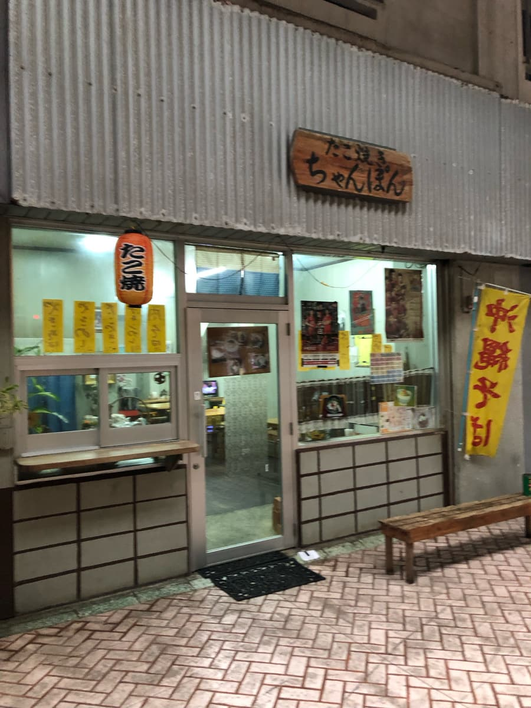
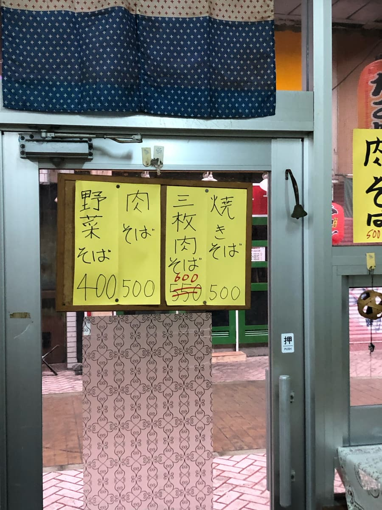
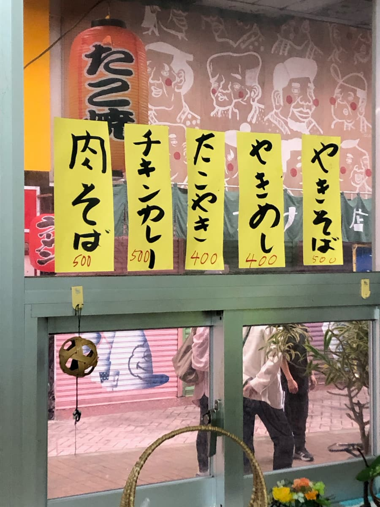
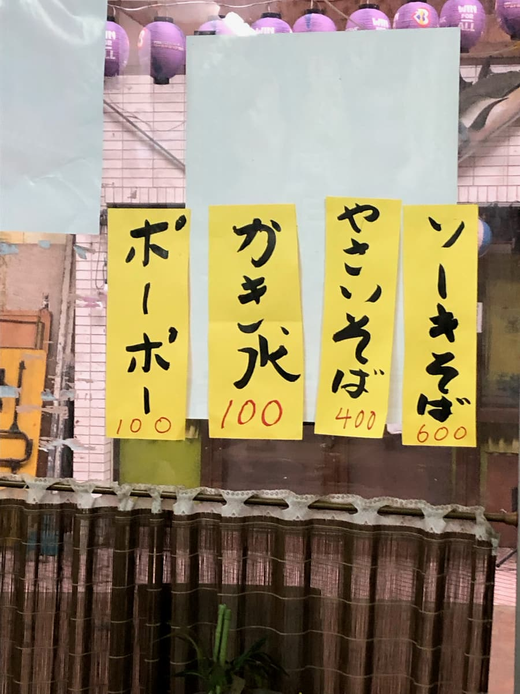
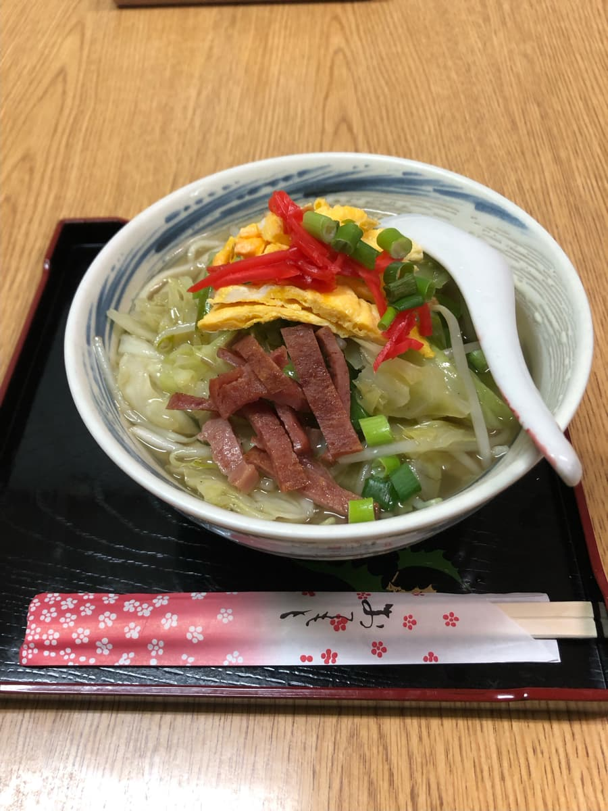
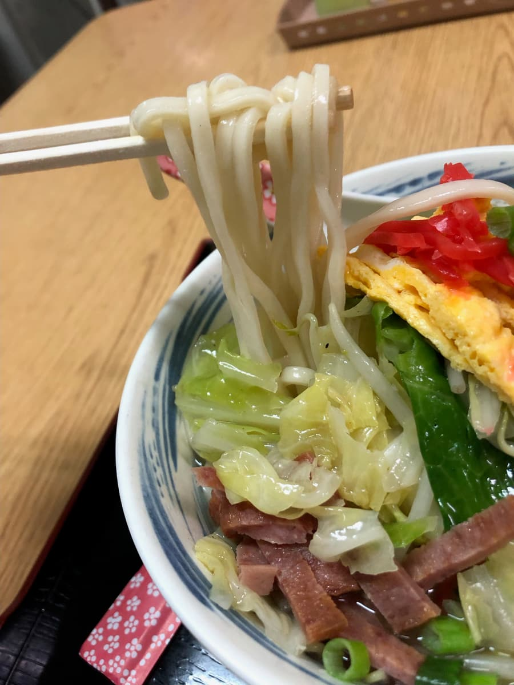

2024年2月吃的😄




店內張貼的菜單，每樣都是其他店沒有的實惠價格😄 在物價高漲、人事成本調漲，很多商品和店家都在漲價的情況下，這種價格真的有賺頭嗎？ 說不定有別的收入來源哈哈
從菜單中點了超級實惠的「蔬菜麵」。400日圓好便宜😄

蔬菜麵來了。份量就很正常地充足😄 首先品嚐湯頭。
是溫和、帶點豬骨基底的湯頭。普通好吃呢。

麵是中粗的直麵，很軟。配料有切成細絲的蛋和午餐肉（SPAM），作為點綴。蔬菜份量相當多，調味屬於清爽系。平常吃的沖繩麵都是碳水化合物和肉，這次也能吃到蔬菜，營養好像均衡了一點😆
評分（9分/15分）：位在沖繩市中央一番街這個很有味道的區域、CP值很高的沖繩麵。味道也普通好吃，大家要不要也來吃一次看看呢😄
麵：★★★☆☆（3）
湯頭：★★★☆☆（3）
配料：★★★☆☆（3）